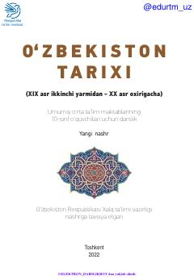

1O10-sinf o'quvchilari uchun XIX asr ikkinchi yarmi va XX asr O'zbekiston tarixiga bag'ishlangan darslik.
Mazkur darslik umumiy o'rta ta'lim maktablarining 10-sinf o'quvchilari uchun mo'ljallangan bo'lib, XIX asr ikkinchi yarmidan XX asr oxirigacha bo'lgan Vatanimiz tarixining murakkab va ziddiyatli davrlarini yoritadi. Kitobda xonliklardagi ijtimoiy-siyosiy ahvol, mustamlaka davri va xalqimizning ozodlik uchun kurashlari haqida hikoya qilinadi.